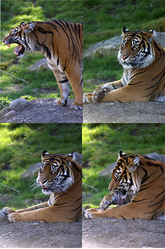
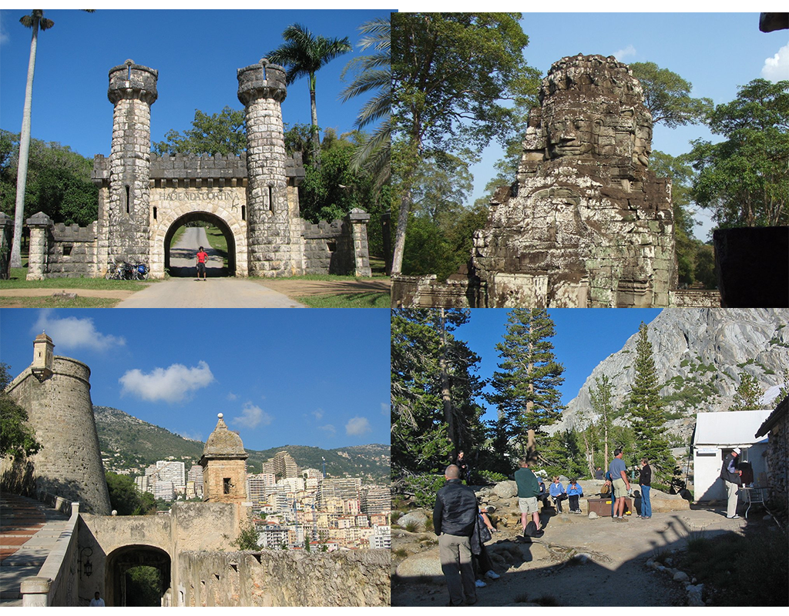
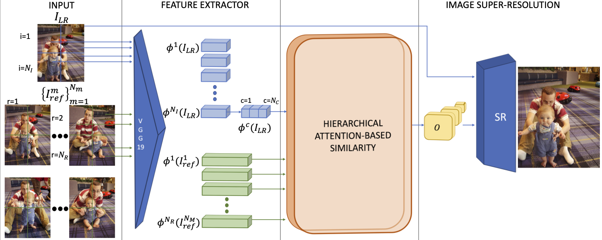
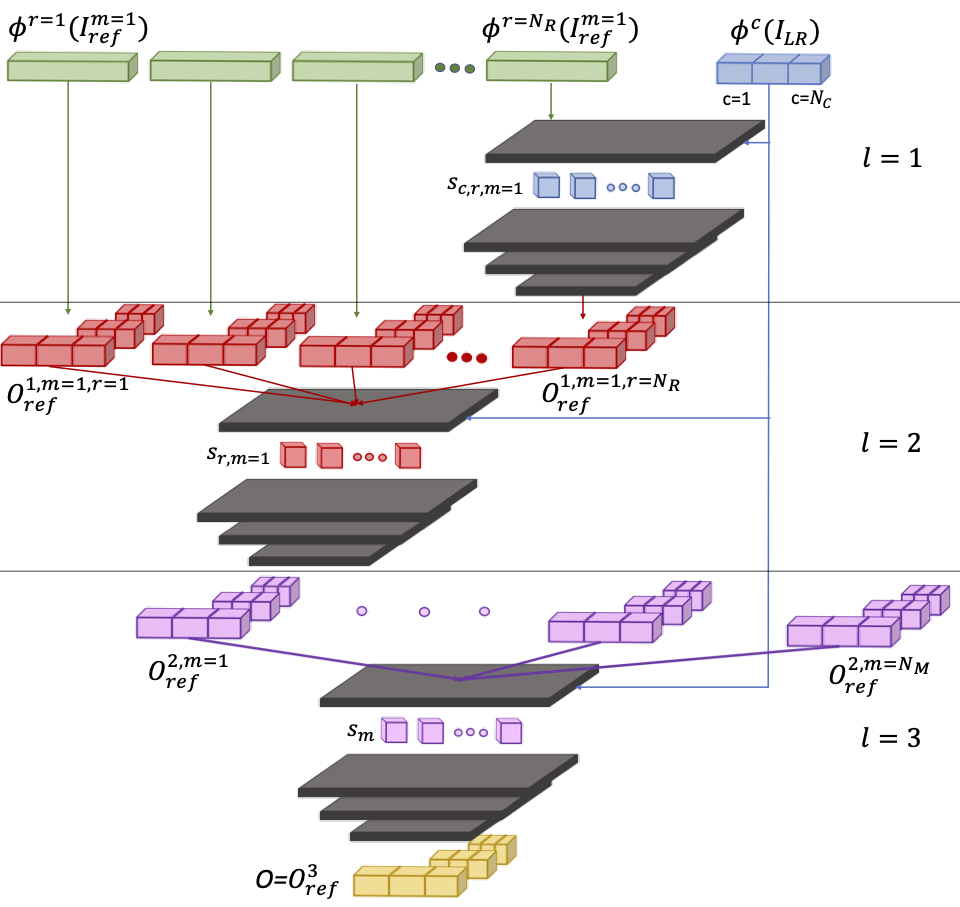

|
CSNLN
|
RSRGAN
|
SRNTT
|
AMRSR (ours)
|
 References
|
|
CSNLN
|
RSRGAN
|
SRNTT
|
AMRSR (ours)
|
 References
|
Abstract
This paper proposes a novel Attention-based Multi-Reference Super-resolution network (AMRSR) that, given a low-resolution image, learns to adaptively transfer the most similar texture from multiple reference images to the super-resolution output whilst maintaining spatial coherence. The use of multiple reference images together with attention-based sampling is demonstrated to achieve significantly improved performance over state-of-the-art reference super-resolution approaches on multiple benchmark datasets. Reference super-resolution approaches have recently been proposed to overcome the ill-posed problem of image super-resolution by providing additional information from a high-resolution reference image. Multi-reference super-resolution extends this approach by providing a more diverse pool of image features to overcome the inherent information deficit whilst maintaining memory efficiency. A novel hierarchical attention-based sampling approach is introduced to learn the similarity between low-resolution image features and multiple reference images based on a perceptual loss. Ablation demonstrates the contribution of both multi-reference and hierarchical attention-based sampling to overall performance. Perceptual and quantitative ground-truth evaluation demonstrates significant improvement in performance even when the reference images deviate significantly from the target image.
AMRSR Approach
Overview of AMRSR

Hierarchical Attention-based Similarity

Paper
Citation
Marco Pesavento,Marco Volino, and Adrian Hilton, "Attention-based Multi-Reference Learning for Image Super-Resolution", IEEE International Conference on Computer Vision (ICCV), 2021.
Bibtex
@inproceedings{ZhangSRNTT2019,
author = {Zhang, Zhifei and Wang, Zhaowen and Lin, Zhe and Qi, Hairong},
title = {Image Super-Resolution by Neural Texture Transfer},
booktitle = {arXiv:1903.00834v1},
year = {2019}
}
Results
Quantitative Evaluation

Qualitative Evaluation

Percentage of votes of SRNTT as compared to each of other methods in the user study

Texture Transfer with Different References (bottom-right)

Investigation on Extreme References

Testing Dataset --- CUFED5
CUFED5 Dataset --- 126 Testing Images (click on the thumbnails to change the sample image)
|
References
- • SRCNN: C. Dong et al., “Image superresolution using deep convolutional networks,” TPAMI, 2015.
- • SCN: Z. Wang et al., “Deep networks for image super-resolution with sparse prior,” ICCV, 2015.
- • DRCN: J. Kim et al., “Deeply-recursive convolutional network for image super-resolution,” CVPR, 2016.
- • LapSRN: W.-S. Lai et al., “Deep Laplacian Pyramid Networks for Fast and Accurate Super-Resolution,” CVPR, 2017.
- • MDSR: B. Lim et al., “Enhanced Deep Residual Networks for Single Image Super-Resolution,” CVPRW, 2017.
- • SelfExSR: J.-B. Huang et al., “Single image superresolution from transformed self-exemplars,” CVPR, 2015.
- • Landmark: H. Yue et al., “Single image superresolution from transformed self-exemplars,” TIP, 2013.
- • ENet: M. Sajjadi et al., “EnhanceNet: Single Image Super-Resolution Through Automated Texture Synthesis,” ICCV, 2017.
- • SRGAN: C. Ledig et al., “Photo-Realistic Single Image Super-Resolution Using a Generative Adversarial Network,” CVPR, 2017. (Implementation)